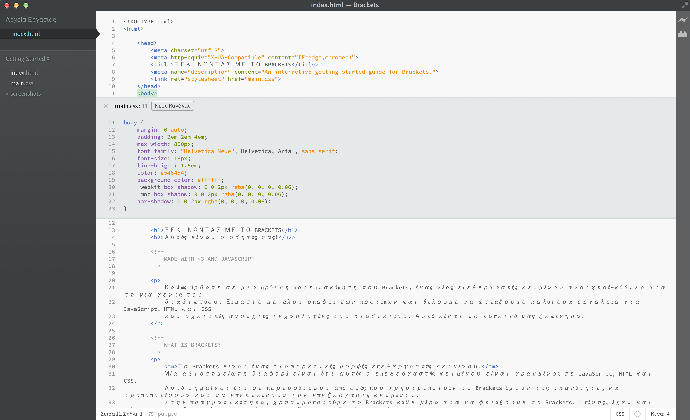

Καλώς ήρθατε σε μια πρώιμη προεπισκόπηση του Brackets, ένας νέος επεξεργαστής κειμένου ανοιχτού-κώδικα για τη νέα γενιά του διαδικτύου. Είμαστε μεγάλοι οπαδοί των προτύπων και θέλουμε να φτιάξουμε καλύτερα εργαλεία για JavaScript, HTML και CSS και σχετικές ανοιχτές τεχνολογίες του διαδικτύου. Αυτό είναι το ταπεινό μας ξεκίνημα.
Το Brackets είναι ένας διαφορετικής μορφής επεξεργαστής κειμένου. Μία αξιοσημείωτη διαφορά είναι ότι αυτός ο επεξεργαστής κειμένου είναι γραμμένος σε JavaScript, HTML και CSS. Αυτό σημαίνει ότι οι περισσότεροι από εσάς που χρησιμοποιούν το Brackets έχουν τις ικανότητες να τροποποιήσουν και να επεκτείνουν τον επεξεργαστή κειμένου. Στην πραγματικότητα, χρησιμοποιούμε το Brackets κάθε μέρα για να φτιάξουμε το Brackets. Επίσης, έχει και κάποιες μοναδικές λειτουργίες όπως η Γρήγορα Επεξεργασία, το Live Preview και άλλες που μπορεί να μην βρείτε σε άλλους επεξεργαστές. Για να μάθετε περισσότερα για το πως να χρησιμοποιήσετε αυτές τις λειτουργίες, συνεχίστε το διάβασμα.
Όχι πια εναλλαγή μεταξύ των αρχείων και απόσπαση της προσοχής. Όταν επεξεργάζεστε HTML, χρησιμοποιήστε την συντόμευση Cmd/Ctrl + E για να ανοίξετε έναν γρήγορο ενσωματωμένο επεξεργαστή που εμφανίζει το σχετικό CSS κώδικα. Κάντε την αλλαγή στον κώδικα CSS, πατήστε ESC και είστε πίσω στην επεξεργασία HTML, ή απλά αφήστε τους CSS κανόνες ανοιχτούς και αυτοί θα γίνουν μέρος του επεξεργαστή HTML. Αν πατήσεις ESC έξω από έναν γρήγορο ενσωματωμένο επεξεργαστή, θα κρυφτούν όλα.
Θέλετε να το δείτε στην πράξη; Βάλε τον κέρσορα στο tag από πάνω και πάτησε Cmd/Ctrl + E. Πρέπει να δεις ένα γρήγορο ενσωματωμένο επεξεργαστή να εμφανίζετε από πάνω, που δείχνει τον κανόνα CSS που σχετίζετε με αυτό το tag. Η Γρήγορη Επεξεργασία λειτουργεί επίσης και για class και id ιδιότητες. Μπορείτε να δημιουργήσετε και νέους κανόνες με τον ίδιο τρόπο. Κάντε κλικ σε ένα από τα tags από πάνω και πατήστε Cmd/Ctrl + E. Δεν υπάρχουν κανόνες για αυτό προς το παρόν, αλλά μπορείτε να πατήσετε το κουμπί Νέου Κανόνα για να εισάγετε έναν νέο κανόνα για το . Μπορείς να χρησιμοποιήσεις την ίδια συντόμευση για κώδικα JavaScript για να δεις το σώμα μιας συνάρτησης με το να τοποθετείς τον κέρσορα στο όνομα της συνάρτησης που καλείτε. Για τώρα οι γρήγοροι ενσωματωμένοι επεξεργαστές δεν μπορούν να γίνουν ένθετοι, άρα μπορείς να χρησιμοποιήσεις την Γρήγορη Επεξεργασία μόνο όταν ο κέρσορας είναι μέσα σε έναν «πλήρους μεγέθους» επεξεργαστή.
Ξέρεις αυτό το «χορό save/reload» που κάνουμε τόσα χρόνια; Αυτό που κάνεις αλλαγές στον επεξεργαστή σου, πατάς αποθήκευση, γυρνάς στον browser και μετά κάνεις ανανέωση για να δεις επιτέλους το αποτέλεσμα; Με το Brackets, δεν χρειάζεται να κάνεις αυτόν τον χορό.
Το Brackets θα ανοίξει μία ζωντανή σύνδεση στον τοπικό σου browser και θα στείλει τους ανανεωμένους κώδικες HTML και CSS καθώς εσύ πληκτρολογείς! Μπορεί ήδη να κάνεις κάτι τέτοιο με εργαλεία που βασίζονται στον browser, αλλά με το Brackets δεν υπάρχει ανάγκη να αντιγράφεις και να επικολλάς τον τελικό κώδικα πίσω στον επεξεργαστή. Ο κώδικας σου τρέχει στον browser, αλλά ζει στον επεξεργαστή σου!
Το Brackets κάνει εύκολο το να βλέπεις πως οι αλλαγές στους κώδικες HTML και CSS θα επηρεάσουν την σελίδα. Όταν ο κέρσορας είναι σε έναν κανόνα CSS, το Brackets θα επισημάνει όλα τα στοιχεία στον browser που επηρεάζονται. Παρόμοια, όταν επεξεργάζεστε ένα αρχείο HTML, το Brackets θα επισημάνει τα αντιστοιχούμενα στοιχεία HTML στον browser.
Αν έχεις εγκατεστημένο τον Google Chrome, μπορείς να το δοκιμάσεις μόνο σου. Κάνε κλικ στο εικονίδιο της αστραπής στην πάνω δεξιά γωνία του παραθύρου του Brackets ή πατήστε Cmd/Ctrl + Alt + P. Όταν το Live Preview ενεργοποιηθεί σε ένα έγγραφο HTML, όλα τα συνδεόμενα αρχεία CSS μπορούν να επεξεργασθούν σε πραγματικό χρόνο. Το εικονίδιο θα αλλάξει από γκρι σε χρυσό όταν το Brackets δημιουργήσει την σύνδεση με τον browser. Τώρα, τοποθέτησε τον κέρσορα του στο από πάνω tag. Παρατηρήστε την μπλε επισήμανση που εμφανίζετε γύρω από την εικόνα στον Chrome. Έπειτα, χρησιμοποιήστε το Cmd/Ctrl + E για να ανοίξετε τους ορισμένους κανόνες CSS. Δοκιμάστε να αλλάξετε το μέγεθος του πλαισίου από 1px σε 10px ή αλλάξτε το χρώμα του φόντου από "dimgray" σε "hotpink". Αν έχετε το Brackets και τον browser σας να είναι δίπλα δίπλα, θα δείτε τις αλλαγές να συμβαίνουν στιγμιαία στον. Αμάτο, έτσι;Σήμερα, το Brackets υποστηρίζει το Live Preview μόνο για HTML και CSS. Όμως, στην τρέχουσα έκδοση, οι αλλαγές σε αρχεία JavaScript ανανεώνονται αυτόματα όταν κάνετε αποθήκευση. Προς το παρόν δουλεύουμε τη υποστήριξη του Live Preview για JavaScript. Επίσης, οι άμεσες προεπισκοπήσεις του Live Preview είναι δυνατές μόνο με τον Google Chrome, αλλά ελπίζουμε να φέρουμε αυτήν την λειτουργία σε όλους τους μεγάλους browser στο μέλλον.
Για όσους από εμάς δεν απομνημονεύσει ακόμα τις αντιστοιχίες χρωμάτων για τις τιμές HEX ή RGB, το Brackets κάνει γρήγορο και εύκολο το να βλέπεις ακριβώς ποιο χρώμα χρησιμοποιείται. Είτε σε CSS είτε σε HTML, απλά περάστε το ποντίκι πάνω από τα τιμές του χρώματος ή τις διαβαθμίσεις χρώματος και το Brackets θα εμφανίσει μια προβολή αυτού του χρώματος ή της διαβάθμισης αυτόματα. Το ίδιο συμβαίνει και με τις εικόνες: απλά περάστε πάνω από τον σύνδεσμο της εικόνας στο Brackets και αυτό θα προβάλει μια μικρογραφία αυτής της εικόνας.
Για να δοκιμάσετε την Γρήγορη Προβολή από μόνος σας, βάλτε τον κέρσορα πάνω από το tag στην κορυφή αυτού του αρχείου και πατήστε Cmd/Ctrl + E για να ανοίξετε έναν γρήγορο επεξεργαστή CSS. Τώρα απλά πηγαίνετε το βελάκι πάνω από οποιοδήποτε τιμή χρώματος μέσα στο αρχείο CSS. Επίσης, μπορείτε να το δείτε στη πράξη σε διαβαθμίσεις χρώματος με το ανοίξετε έναν γρήγορο επεξεργαστή CSS στο tag και πηγαίνοντας το βελάκι πάνω από οποιαδήποτε τιμή χρώματος του φόντου. Για να χρησιμοποιήσετε την προβολή εικόνας, βάλτε τον κέρσορα πάνω από το screenshot που συμπεριλήφθηκε προηγουμένως σε αυτό το έγγραφο.Εκτός από όλα τα καλά που έχει το Brackets, η μεγάλη και αυξανόμενη κοινότητα των developers επεκτάσεων έχει φτιάξει πάνω από εκατό επεκτάσεις που προσθέτουν χρήσιμες λειτουργίες. Αν υπάρχει κάτι που χρειάζεστε και το Brackets δεν το προσφέρει, είναι πολύ πιθανό κάποιος να έχει φτιάξει μία επέκταση για αυτό. Για να περιηγηθήτε ή να ψάξετε τη λίστα των διαθέσιμων επεκτάσεων, πηγαίντε Αρχείο > Διαχειρηστής Επεκτάσεων και κάντε κλικ στην καρτέλα «Διαθέσιμες». Όταν βρείτε μια επέκταση που θέλετε, απλά κάντε κλικ στο κουμπί της εγκτάστασης δίπλα του.
Το Brackets είναι ένα project ανοιχτού κώδικα. Web developers από όλον τον κόσμο συνεισφέρουν για να φτιάξουν έναν καλύτερο επεξεργαστή κώδικα. Πολλοί περισσότεροι φτιάχνουν επεκτάσεις που επεκτείνουν τις δυνατότητες του Brackets. Πείτε μας τι πιστεύετε, μοιραστείτε τις ιδέες σας ή συνεισφέρετε άμεσα στο project.